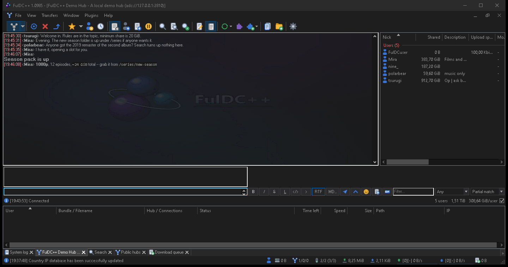

The main window
Every part of the FulDC++ window, from the menu bar down to the status bar.
FulDC++ is a tabbed application. One frame holds the menu bar and toolbars at the top, a strip of tabs, whatever window you have open in the middle, a transfer pane docked along the bottom, and a status bar. Hubs, searches, file lists and every tool window all open as tabs in that one frame.

The menu bar
File
Opening and matching file lists, refreshing your share, and the shortcuts to your downloads, log and settings folders. Also Quick connect, Connect to favorite hubs, Reconnect and Follow last redirect; the Setup wizard; Settings; Create backup now; Get TTH of file; and Check for updates.
View
Opens every tool window — public, recent and favourite hubs, favourite users, search, ADL search, search spy, auto search, extensions, protocol debug, notepad, system log, RSS feeds, streaming, the web browser and the hashing progress dialog. The bottom of the menu toggles the interface pieces themselves: toolbar, status bar, transfer view, media toolbar, the toolbar progress bar, and Lock toolbars.
Transfers
The Download queue, the Upload queue (users waiting for a slot) and Finished uploads.
Window
Tab and window management: cascade, tile, minimise or restore everything, sort tabs. Then a large set of bulk-close commands — close all hubs, all PMs, all offline PMs, all file lists, all searches, all viewed files, everything disconnected or idle, everything in or not in a favourite hub group. Also Reconnect disconnected, Mark as read, Duplicate tab, Toggle tab notifications and Clean all main chats.
Help
About, plus links to the homepage, these guides, the discussion forum and the bug tracker.
The main toolbar
Twenty-five buttons, grouped by separators. Buttons that open a tool window are toggles — press again to close it. Hovering any button shows its name.
| Group | Buttons |
|---|---|
| Hubs | Public hubs · Reconnect · Disconnect · Follow redirect · Favorite hubs · Favorite users · Recent hubs |
| Transfers | Download queue · Upload queue · Finished uploads |
| Finding | Search · ADL search · Search spy · Auto search |
| Tools | Notepad · System log · Refresh file list · Extensions · Open file list · Open downloads folder |
| Status | Away · Settings · RSS · Pause all downloads · Plugins |
Several buttons carry a drop-down arrow with extra choices: Public hubs lists your hubs to connect to, Open file list lists recently opened lists, Favorite hubs drops down your favourites, and Pause all downloads exposes the speed limiter.
Customising it
FulDC++ only. Right-click the toolbar for Customize toolbar… (add, remove and reorder buttons; you can also Shift-drag buttons directly), Reset to default, and a Shortcuts submenu that puts buttons for your own programs on the toolbar. The same menu toggles the toolbar, its progress bar and the toolbar lock. Icon size and icon packs live in Settings → Appearance → Toolbar and apply immediately.
The media toolbar
A second, optional toolbar (View → Media toolbar) controls your music player: start, back, play, pause, next, stop and three volume steps, plus a button that posts what you are listening to into the current chat. Choose the player — Winamp, iTunes, Media Player Classic, Windows Media Player, Spotify or foobar2000 — in Settings → Advanced → Miscellaneous.
Tabs
Every window you open becomes a tab. Tabs colour themselves when something happens in them, so an unread hub message or a finished search is visible without switching. Middle-click closes a tab; right-click gives per-tab actions. Whether the strip sits at the top or the bottom, how wide tabs get and how they group is configured in Settings → Appearance → Tabs.
FulDC++ also supports Windows taskbar tabs, so open hubs can appear as separate thumbnails when you hover the taskbar icon.
The transfer pane
Docked along the bottom of the window (toggle it with View → Transfer view), this is the live view of everything moving right now — one row per connection, grouped under the bundle it belongs to, with a progress bar, speed, and the user and hub on the other end. Right-click a row to force an attempt, remove the source, send a private message or open the user's file list.
FulDC++ only: the client's own HTTP downloads appear here too — update checks, hub lists, the GeoIP database, RSS fetches — so a stalled background download is visible instead of invisible. Those rows have their own right-click menu with Copy URL and Remove.
The status bar
Fourteen panels, left to right. Any of them except the log line and the shutdown timer can be hidden — right-click the status bar to choose.
| Panel | Shows |
|---|---|
| Last line | The most recent system log message. Click it to open the system log. |
| Away | Whether away mode is on. |
| Shared | The total size of your share. |
| Shared files | How many files that is. |
| Hubs | How many hubs you are connected to. |
| Fav users | How many of your favourite users are online. |
| Slots | Free upload slots out of the total. |
| Downloaded / Uploaded | Session totals. |
| DL / UL speed | Current combined transfer speeds. |
| Queued | The total size still waiting in the download queue. |
| Refresh status | Share refresh and hashing progress. |
| Shutdown | The countdown, when a timed shutdown is armed. |
The tray icon
FulDC++ can minimise to the notification area. Right-click the tray icon for show/hide, the downloads folder, a share refresh, the speed limiter, About, restart and exit. Whether closing or minimising the window sends it to the tray is set in Settings → Appearance.